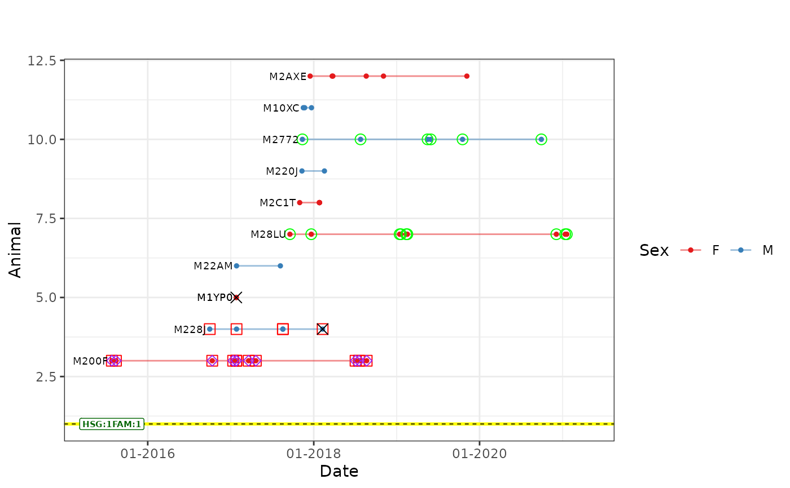

Creates "capture" history plot of individuals
arranged by families included in data frame created by plot_table() function.
Usage
ped_satplot(
plottable,
famSpacing = 2,
hsGroupSpacing = 2,
xWhiteSpace = 100,
xlabel = "Date",
ylabel = "Animal",
title = "",
subtitle = "",
LegendLabel = "Sex",
xlegend = 0.2,
ylegend = 0.94,
text_size = 2.5,
fam_label_size = 2
)Arguments
- plottable
Data frame. Output of
plot_table()function.- famSpacing
Y-axis spacing between families. Should be even number!
- hsGroupSpacing
Y-axis spacing between half-sib groups. Should be even number!
- xWhiteSpace
Spacing on the X-axis at the beginning and end of the plot.
- xlabel
X-axis label.
- ylabel
Y-axis label.
- title
Plot title.
- subtitle
Plot subtitle.
- LegendLabel
Title of the legend.
- xlegend
Horizontal position of the legend.
- ylegend
Vertical position of the legend.
- text_size
Plot text size.
- fam_label_size
Family label text size.
Examples
# Prepare the data for usage with plot_table() function.
# Get animal timespan data using the anim_timespan() function.
animal_ts <- anim_timespan(wolf_samples$AnimalRef,
wolf_samples$Date,
wolf_samples$SType,
dead = c("Tissue")
)
# Add animal timespan to the sampledata
sampledata <- merge(wolf_samples, animal_ts, by.x = "AnimalRef", by.y = "ID", all.x = TRUE)
# Define the path to the pedigree data file.
path <- paste0(system.file("extdata", package = "wpeR"), "/wpeR_samplePed")
# Retrieve the pedigree data from the get_colony function.
ped_colony <- get_colony(path, sampledata, rm_obsolete_parents = TRUE, out = "FamAgg")
# Organize families and expand pedigree data using the org_fams function.
org_tables <- org_fams(ped_colony, sampledata, output = "both")
# Prepare data for plotting.
pt <- plot_table(plot_fams = 1,
org_tables$fams,
org_tables$ped,
sampledata,
deadSample = c("Tissue")
)
# Run the function.
# Get a temporal pedigree plot.
ped_satplot(plottable = pt)
